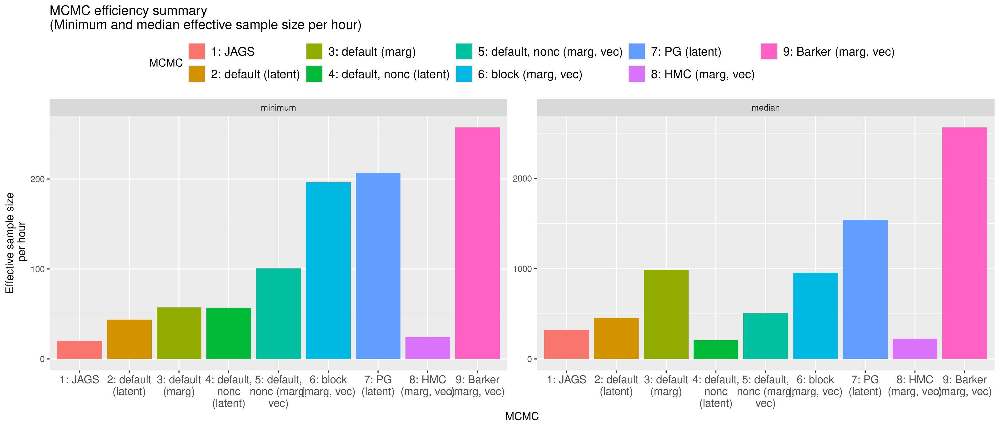
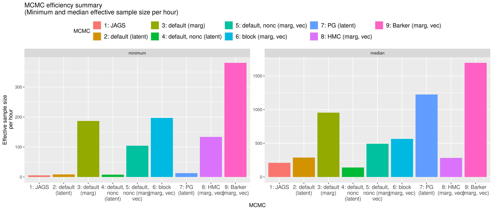

Code
source(file.path("..", "examples", "DeerEcervi", "load_DeerEcervi.R"),
chdir = TRUE)NIMBLE Alaska ASA 2026 Workshop
Some strategies for improving MCMC (some already seen; some discussed here)
source(file.path("..", "examples", "DeerEcervi", "load_DeerEcervi.R"),
chdir = TRUE)Sampler choices:
Centering refers to two issues:
Length, but not separately for each sex.farm_effect ~ N(0, sd) vs. farm_effect ~ N(mean, sd).sampler_noncentered in a centered parameterization to be able to sample both ways (interweaving).Occupancy models in ecology:
We analyzed 15 carnivore species in California based on camera trap data from California Department of Fish and Wildlife (CDFW).
code <- nimbleCode({ # Model code is specified in R.
# (hyper)parameter priors
for(k in 1:k_occ) {
mu_occ[k] ~ dnorm(0, sd = 100) # Various parameterizations possible; `sd` here.
sd_occ[k] ~ dunif(0, 100) # Avoid inverse-gamma priors per Gelman (2006).
}
for(k in 1:k_detect) {
mu detect[k] ~ dnorm(0, sd = 100)
sd detect[k] ~ dunif(0, 100)
}
for (i in 1:n_species) {
# Random effects distributions for regression coefficients.
for(k in 1:k_occ)
beta_occ[k, i] ~ dnorm(mu_occ[k], sd = sd_occ[k])
for(k in 1:k_detect)
beta_detect[k, i] ~ dnorm(mu_detect[k], sd = sd_detect[k])
# Probability of occupancy with covariates varying by site.
logit(prob_occ[1:n_sites,i]) <- X_occ[1:n_sites,1:k_occ] %*% beta_occ[1:k_occ,i]
# Probability of detection, covariates varying by site-time or site-time-species.
logit(prob_detect[1:n_sites, 1:max_num_sites, i]) <- beta_detect[1,i] +
beta_detect[2,i] * X_detect1[1:n_sites,1:max_num_sites] +
beta_detect[3,i] * X_detect2[1:n_sites,1:max_num_sites] +
beta_detect[4,i] * X_detect3[1:n_sites,1:max_num_sites] +
beta_detect[5,i] * X_detect4[1:n_sites,1:max_num_sites,i]
## User-defined vectorized distribution for obs. matrix, one term per species.
y[1:n_sites, 1:max_num_sites, i] ~ dOcc_multisite(
probOcc = prob_occ[1:n_sites,i],
probDetect = prob_detect[1:n_sites, 1:max_num_sites, i],
reps = reps[1:n_sites], # Number of time points per site.
n_sites = n_sites)
}})dOcc_multisite uses a user-defined distribution to achieve:
More on user-defined distributions in Module 6.
model <- nimbleModel(code, data = list(y = y),
constants = list(n_sites = n_sites, n_species = n_species,
max_num_sites = max_num_sites, reps = reps, k_occ = k_occ,
k_detect = k_detect, X_occ = X_occ,
X_detect1 = X_detect1, X_detect2 = X_detect2,
X_detect3 = X_detect3, X_detect4 = X_detect4),
inits = inits, buildDerivs = TRUE) # Inits not shown here.
cmodel <- compileNimble(model) # Compiled (C++) version of the model.First, we set up HMC, with all parameters sampled together.
library(nimbleHMC)
monitors <- c('mu_occ','sd_occ','mu_detect','sd_detect','beta_occ','beta_detect')
conf <- configureHMC(model, control = list(warmupMode = 'iterations',
warmup = 1000), monitors = monitors)
hmc <- buildMCMC(conf)
chmc <- compileNimble(hmc, project = model)
samples_hmc <- runMCMC(chmc, niter = 6000, nburnin = 1000)After some exploration, we developed a customized MCMC configuration involving Barker-based block sampling on blocks of parameters.
The Barker sampler is an gradient-based adaptive Metropolis-Hastings algorithm that provides more robustness to tuning than Metropolis-adjusted Langevin sampling and is less computationally intensive than HMC.
# Set up initial MCMC sampler config just on the means (NIMBLE detects conjugacy).
conf <- configureMCMC(model, nodes = c('mu_occ','mu_detect'), monitors = monitors)
sd_nodes <- model$expandNodeNames(c('sd_occ','sd_detect'))
for(node in sd_nodes)
conf$addSampler(node, type = 'slice') # Slice sampling for variance components.
for (i in 1:n_species){
# Specialized block (Barker) sampling for random effects (regression coefficients),
# with a block for each species within each logistic regression component.
blockNodes <- model$expandNodeNames(paste0('beta_occ[,',i,']'))
conf$addSampler(blockNodes, type = 'barker')
blockNodes <- model$expandNodeNames(paste0('beta_detect[,',i,']'))
conf$addSampler(blockNodes, type = 'barker') }
mcmc <- buildMCMC(conf)
cmcmc <- compileNimble(mcmc, project = model)
samples_custom <- runMCMC(cmcmc, 25000, nburnin = 2000)We also tried using NIMBLE’s standard block sampler via:
conf$addSampler(blockNodes, type = 'RW_block')
mcmcse method) for parameters
mcmcse method) for random effectsConsider a basic state-space model.
Observation equation: \(y_t \sim f(y_t | x_t)\). (Parameters are not shown.)
State equation: \(x_t \sim g(x_t | x_{t-1})\)
Two equivalent ways to write state-space models:
code_heavy <- nimbleCode({
for(t in 1:n)
y[t] ~ dnorm(x[t], sd = sigma)
for(t in 2:n) {
x[t] <- x[t-1] + eps[t-1]
eps[t] ~ dnorm(0, sd = omega)
}
})code_light <- nimbleCode({
for(t in 1:n)
y[t] ~ dnorm(x[t], sd = sigma)
for(t in 2:n)
x[t] ~ dnorm(x[t-1], sd = omega)
})n <- 20
m_heavy <- nimbleModel(code_heavy,
data = list(y = rnorm(n)),
constants = list(n = n))Defining modelBuilding modelSetting data and initial valuesRunning calculate on model
[Note] Any error reports that follow may simply reflect missing values in model variables.Checking model sizes and dimensions [Note] This model is not fully initialized. This is not an error.
To see which variables are not initialized, use model$initializeInfo().
For more information on model initialization, see help(modelInitialization).m_light <- nimbleModel(code_light,
data = list(y = rnorm(n)),
constants = list(n = n))Defining modelBuilding modelSetting data and initial valuesRunning calculate on model
[Note] Any error reports that follow may simply reflect missing values in model variables.Checking model sizes and dimensions [Note] This model is not fully initialized. This is not an error.
To see which variables are not initialized, use model$initializeInfo().
For more information on model initialization, see help(modelInitialization).What calculations are required to update eps[18] or eps[1] compared to x[18] or x[1]?
m_heavy$getDependencies('eps[18]')[1] "eps[18]" "x[19]" "y[19]" "x[20]" "y[20]" m_light$getDependencies('x[18]')[1] "x[18]" "y[18]" "x[19]"m_heavy$getDependencies('eps[1]') [1] "x[2]" "y[2]" "x[3]" "y[3]" "x[4]" "y[4]" "x[5]" "y[5]" "x[6]"
[10] "y[6]" "x[7]" "y[7]" "x[8]" "y[8]" "x[9]" "y[9]" "x[10]" "y[10]"
[19] "x[11]" "y[11]" "x[12]" "y[12]" "x[13]" "y[13]" "x[14]" "y[14]" "x[15]"
[28] "y[15]" "x[16]" "y[16]" "x[17]" "y[17]" "x[18]" "y[18]" "x[19]" "y[19]"
[37] "x[20]" "y[20]"m_light$getDependencies('x[1]')[1] "y[1]" "x[2]"Vectorizing some calculations:
code <- nimbleCode({
intercept ~ dnorm(0, sd = 1000)
slope ~ dnorm(0, sd = 1000)
sigma ~ dunif(0, 100)
predicted.y[1:4] <- intercept + slope * x[1:4] # vectorized node
for(i in 1:4) {
y[i] ~ dnorm(predicted.y[i], sd = sigma)
}
})
model <- nimbleModel(code, data = list(y = rnorm(4)))Defining modelBuilding modelSetting data and initial valuesRunning calculate on model
[Note] Any error reports that follow may simply reflect missing values in model variables.Checking model sizes and dimensions [Note] This model is not fully initialized. This is not an error.
To see which variables are not initialized, use model$initializeInfo().
For more information on model initialization, see help(modelInitialization).model$getDependencies('slope')[1] "slope" "predicted.y[1:4]" "y[1]" "y[2]"
[5] "y[3]" "y[4]" Here sampling of slope (and intercept) will probably be a bit more efficient because of the vectorized definition of predicted.y, since all observations depend on slope (and intercept).
We avoid some overhead by having one predicted.y[1:4] node rather than four predicted.y[1], ..., predicted.y[4] nodes.
Another (manual) step would be to create a user-defined vectorized dnorm distribution so y[1:4] is a vector node.
However, if x[2] (and the other ’x’s) were a scalar parameter (in this case a random effect), vectorization is likely a bad idea. Any update for x[2] will calculate predicted.y[1:4] and y[1],...,y[4] when only predicted.y[2] and y[2] need to be calculated.
code <- nimbleCode({
intercept ~ dnorm(0, sd = 1000)
slope ~ dnorm(0, sd = 1000)
sigma ~ dunif(0, 100)
predicted.y[1:4] <- intercept + slope * x[1:4] # vectorized node
for(i in 1:4) {
x[i] ~ dnorm(0, 1) # scalar random effects
y[i] ~ dnorm(predicted.y[i], sd = sigma)
}
})
model <- nimbleModel(code, data = list(y = rnorm(4)))Defining modelBuilding modelSetting data and initial valuesRunning calculate on model
[Note] Any error reports that follow may simply reflect missing values in model variables.Checking model sizes and dimensions [Note] This model is not fully initialized. This is not an error.
To see which variables are not initialized, use model$initializeInfo().
For more information on model initialization, see help(modelInitialization).model$getDependencies('x[2]')[1] "x[2]" "predicted.y[1:4]" "y[1]" "y[2]"
[5] "y[3]" "y[4]" In this case, vectorization has made more dependencies for x[2] than should be necessary. This would result in wasted computation during MCMC sampling.
In a hierarchical model, one can in principle always integrate over latent states. However only under certain situations can one do those integrals in closed form (analytically).
Analytic integration is always possible in conjugate situations. For example:
\[ y_i \sim N(\mu_i, \sigma^2); i=1,\ldots,n \] \[ \mu_i \sim N(\mu_0, \sigma_0^2), i=1,\ldots,n \]
Here there is one latent state per observation. We can do MCMC here, but it involves a large number of parameters, n+3.
If we marginalize:
Here’s the marginalized result, with only 3 parameters.
\[ y_i \sim N(\mu_0, \sigma^2 + \sigma_0^2) \]
(If we want inference on \(\mu_i, i=1,\ldots,n\) we need to sample the latent states conditional on the data and the MCMC draws of \(\mu_0, \sigma_0^2, \sigma^2\). We’ll work on this in Module 9b.)
We can always integrate over (finite-valued) discrete random variables by summation, so we can integrate over presence/absence indicators for each species by site.
This is required to use gradient-based samplers such as HMC and Barker (if run on the full model as one sampler) since one can differentiate the model log-probability with respect to discrete nodes.
That’s what dOcc_multisite does:
dOcc_multisite <- nimbleFunction(run =
function(x = double(2), probOcc = double(1), probDetect = double(2),
reps = double(1), n_sites = integer(0), log = logical(0, default = TRUE)) {
returnType(double(0)) # Return type annotation for compilation to C++.
logProb <- 0
for(j in 1:n_sites) {
nrep <- ADbreak(reps[j]) # Avoid differentiation w.r.t. `reps[j]`.
logProb_x_given_occupied <- 0
prob_x_given_unoccupied <- 1
for(i in 1:nrep) {
x_ji <- ADbreak(x[j,i]) # Avoid differentiation w.r.t. x[j,i].
if(!is.na(x_ji)) {
logProb_x_given_occupied <- logProb_x_given_occupied +
dbinom(x[j,i], prob = probDetect[j,i], size = 1, log = TRUE)
if(x_ji == 1) prob_x_given_unoccupied <- 0
}
}
logProb <- logProb + log( exp(logProb_x_given_occupied) * probOcc[j] +
prob_x_given_unoccupied * (1 - probOcc[j]) )
}
if(log) return(logProb) else return(exp(logProb))
}, buildDerivs = list(run = list(ignore=c('i','j','x_ji','nrep')))) # Ignore in AD.To see the idea of marginalization more clearly, let’s look at a simpler version for a single site, dOcc_v from nimbleEcology:
dOcc_v <- nimbleFunction(
run = function(x = double(1), # Detection 0/1 indicators (data) over occasion (time)
probOcc = double(0),
probDetect = double(1), # Detection prob. varies over occasion (time)
len = integer(0, default = 0),
log = logical(0, default = 0)) {
if (len != 0) if (len != length(x)) stop("Argument 'len' must match length of data, or be 0.")
if (length(x) != length(probDetect)) stop("Length of data does not match length of detection vector.")
returnType(double(0))
logProb_x_given_occupied <- 0
prob_x_given_unoccupied <- 1
for(i in 1:length(x)) { # Iterate over occasions.
xi <- ADbreak(x[i])
if(!is.na(xi)) { # Handle missing values
logProb_x_given_occupied <- logProb_x_given_occupied + dbinom(x[i], prob = probDetect[i], size = 1, log = TRUE)
if(xi==1) prob_x_given_unoccupied <- 0
}
}
prob_x_given_occupied <- exp(logProb_x_given_occupied)
prob_x <- prob_x_given_occupied * probOcc + prob_x_given_unoccupied * (1 - probOcc)
if (log) return(log(prob_x))
return(prob_x)
}, buildDerivs = list(run = list(ignore = c("i", "xi")))
)One can then immediately use the distribution in a model as shown earlier. NIMBLE will compile the user-defined distribution together with everything else, as if dOcc_multisite were a distribution that NIMBLE provides.
Work on applying different samplers to the E. cervi example (or some other example of your choice) and see how that affects MCMC mixing and efficiency.
Compare performance on the centered versus uncentered E. cervi model.
See help(samplers) and look at the control options for the Barker or RW_block sampler. Try some different values for those options.